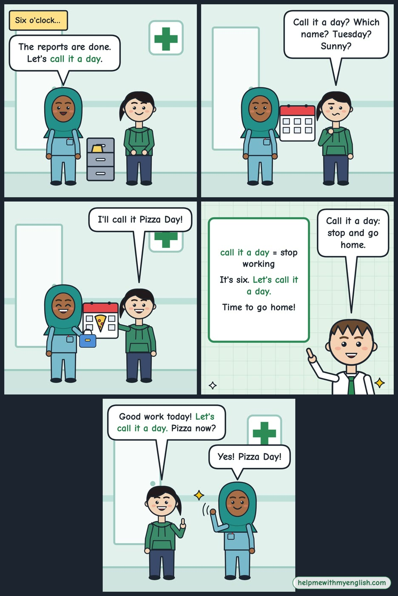

call it a day
To stop working for the day.
We've done enough work. Let's call it a day.
Tip: Use it as a fixed phrase: 'Let's call it a day' to suggest stopping, or 'We called it a day' for the past. It often follows a long effort, and it works at the end of any task, not only paid work.
Hear it in conversation
Workbook
1. What does it mean?
In this conversation, what does 'call it a day' mean?
2. Fill the gap
We've been painting the kitchen for six hours, so let's and finish the rest on Saturday.
3. Choose the best reply
Amira: We've been revising for four hours and I can't remember anything I just read.
4. Your turn: speak
Tell me about a time you worked or studied for a long time on something. How did you know it was time to stop?
Show an example answer
Last month I was preparing a report for my manager, and I worked on it for almost nine hours. By the evening I kept making silly mistakes, so I decided to call it a day. I felt much more focused the next morning and finished it in an hour.
Answer key: call it a day
- 1. B. Stop working for now
- 2. call it a day
- 3. B. Honestly, we should call it a day and start fresh tomorrow.
- 4. Example: Last month I was preparing a report for my manager, and I worked on it for almost nine hours. By the evening I kept making silly mistakes, so I decided to call it a day. I felt much more focused the next morning and finished it in an hour.
See it in a comic
